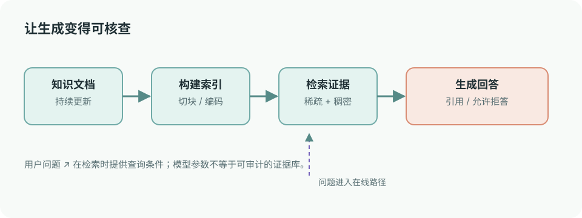

RETRIEVAL · EVIDENCE · GENERATION
把生成变成
可以追溯的回答。
当答案需要来自最新文档、企业知识库或特定版本的依据时，模型参数并不够。沿着一条可检查的证据链，理解检索增强生成（RAG）的算法、系统与工程权衡。

28完整章节路线
06知识阶段
06已精修的基础与索引篇
A MECHANISM-FIRST COURSE
从问题出发，而不是先堆框架。
每个核心概念沿着「现实问题 → 数据流图 → 机制解释 → 可运行最小实验 → 评估与边界」展开。特别关注 检索是否找对、证据是否够用、回答是否真实依赖证据 这三个彼此不同的问题。
THE LEARNING MAP
按系统依赖组织的学习路线
01 · 基础认知
从模型局限理解 RAG 的机制02 · 数据准备
解析、分块、Embedding 与索引03 · 检索增强
召回、融合、重排与上下文构建CHAPTER 08
稀疏检索与BM25
倒排索引原理 · BM25公式详解 · SPLADE学习型检索
既有章节 · 待精修CHAPTER 09稠密检索与语义搜索
DPR双编码器 · 相似度度量方法 · 语义漂移问题
既有章节 · 待精修CHAPTER 10混合检索策略
稀疏+稠密融合 · RRF结果融合 · 多路召回架构
既有章节 · 待精修CHAPTER 11重排序技术
Cross-Encoder原理 · 两阶段检索架构 · 主流Reranker对比
既有章节 · 待精修CHAPTER 12查询优化与重写
HyDE假设文档嵌入 · Step-Back后退提示 · 查询分解
既有章节 · 待精修CHAPTER 13上下文增强与提示工程
上下文窗口管理 · Lost-in-the-Middle · 提示模板设计
既有章节 · 待精修04 · 可信生成
引用、核验、隐私、安全与评估05 · 扩展架构
多模态、图检索与 Agent 编排CHAPTER 19
多模态RAG
图文跨模态检索 · CLIP模型应用 · 表格检索策略
既有章节 · 待精修CHAPTER 20GraphRAG与知识图谱
向量检索盲区 · 知识图谱构建 · Microsoft GraphRAG
既有章节 · 待精修CHAPTER 21Agentic RAG
LLM Agent编排 · LangGraph工作流 · ReAct模式
既有章节 · 待精修CHAPTER 22高级索引架构
层级索引设计 · 自修正索引 · 增量实时更新
既有章节 · 待精修CHAPTER 23LangChain vs LlamaIndex
框架设计哲学 · 核心抽象对比 · 数据摄入能力
既有章节 · 待精修